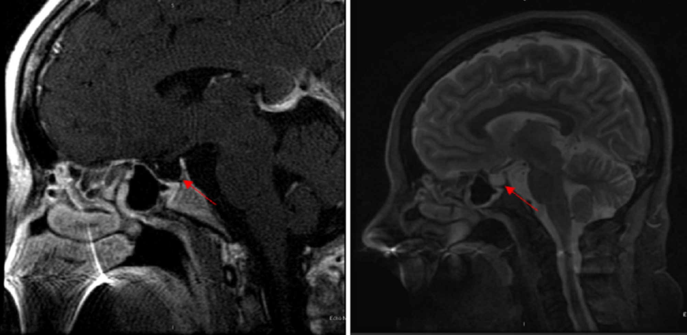

Página 8 · Hemorragia puerperal
Fechar o Caso 3: o método e a Sheehan
Ao final desta síntese, você consegue:
- classificar a hemorragia do caso no tempo;
- nomear cada fator de risco e o “T” que ele arma;
- dizer a suspeita principal e a conduta que a antecede;
- listar as complicações óbvias e reconhecer o específico-de-GO.
Classificar o Caso 3 — precoce/primária
Comece pela classificação, porque ela fecha o loop com o começo. A paciente sangrou cerca de uma hora após o parto — portanto, dentro das primeiras 24 horas. A hemorragia dela é precoce, também chamada primária. É exatamente o par de rótulos semeado na abertura: precoce = primária, das primeiras 24 h, onde está a maioria dos casos. Nomear a classificação é o primeiro passo do raciocínio — e a resposta que a banca cobra logo de entrada.
Os fatores de risco presentes no caso
Agora, por que ela sangrou. O Caso 3 é uma coleção de fatores de risco: secundamento prolongado (os 45 minutos, contra a régua de 30), multiparidade, polidrâmnio (útero superdistendido pela diabetes gestacional), fórceps e uso de ocitocina no trabalho de parto. Cada um desses não é detalhe narrativo — é uma pista que aponta um mecanismo.
Cada fator aponta um “T”
Aqui o raciocínio fica cirúrgico. Polidrâmnio / útero superdistendido → predispõe à atonia (um útero esticado demais contrai mal). Multiparidade → atonia (útero “cansado” de muitas gestações). Secundamento prolongado → atonia. E fórceps → predispõe à laceração de canal (instrumentação do trajeto). Repare que quase todos os fatores empurram para o mesmo vilão — o T de Tônus —, e um deles abre a porta para o T de Trauma.
O contraintuitivo — a ocitocina do parto que predispõe à atonia
E há a pegadinha mais elegante do caso: a própria ocitocina usada no trabalho de parto aumenta a chance de atonia. O fármaco que trata a atonia, quando usado prolongadamente na indução/condução do parto, dessensibiliza os receptores e predispõe ao útero molengo depois. O que ajuda no momento certo atrapalha quando usado antes — é o tipo de contraintuitivo que a banca ama, porque o aluno pensa “ocitocina protege” e marca errado.
As suspeitas — atonia sempre a principal, e rever o canal antes de operar
Somando tudo, as suspeitas diagnósticas do caso são atonia e laceração. E há uma regra de hierarquia: a atonia é sempre a principal suspeita — ainda mais com multiparidade e polidrâmnio somados; a laceração entra pelo uso do fórceps. Mas cuidado com o desfecho: diante do insucesso das medidas para atonia (massagem, ocitocina), antes de indicar cirurgia (balão, B-Lynch), é obrigatório rever cuidadosamente o canal — pode ser só uma laceração baixa, e a cirurgia seria desnecessária. Revisar o trajeto antes de escalar para o mutilante é o que separa a conduta madura da precipitada.
As complicações óbvias
Quando o sangue enfim para, o que vigiar? Comece pelo óbvio. Quem sangrou muito faz anemia, insuficiência renal aguda (por hipoperfusão) e coagulação intravascular disseminada (CIVD) — nenhuma delas específica da obstetrícia; são as complicações de qualquer grande sangramento. A doutrina de prova é direta: nas complicações, vá no óbvio primeiro — anemia, IRA, CIVD. Bota o óbvio, poupa espaço na cabeça.
O específico-de-GO — a síndrome de Sheehan, escondida na amenorreia
E aqui está o diferencial que faz a questão difícil. O específico da obstetrícia é a síndrome de Sheehan: a paciente sangrou tanto no parto/puerpério que necrosou a hipófise — necrose isquêmica da glândula, levando a pan-hipopituitarismo. A hipófise, hipertrofiada na gravidez e muito sensível à hipoperfusão, morre quando o sangramento derruba a perfusão. A consequência clássica: após o parto, a paciente para de menstruar. E a pegadinha é topográfica na prova: a Sheehan costuma aparecer na descrição de amenorreia — e frequentemente na incapacidade de amamentar (a prolactina cai) —, não como complicação aguda da hemorragia. É onde a banca esconde o tema: você lê “puérpera que sangrou muito no parto e meses depois não menstrua nem lactou” e tem que puxar o fio até a hipófise necrosada. Quem procura Sheehan só na fase aguda não a encontra.

RM sagital: a sela túrcica “vazia” preenchida por líquor, com a hipófise residual achatada contra o assoalho (setas). Numa mulher com história de hemorragia pós-parto, é o que transforma o achado radiológico em Sheehan — diferente da sela vazia primária, incidental e sem contexto hemorrágico.
Cureus, Chronic Sheehan’s Syndrome (artigo 24517). Licença Creative Commons Attribution (CC BY).
Anemia
De qualquer grande sangramento.
IRA
Por hipoperfusão.
CIVD
Coagulação intravascular disseminada.
Síndrome de Sheehan
Necrose isquêmica da hipófise pós-hemorragia → pan-hipopituitarismo. Aparece tarde: amenorreia + falha de lactação, meses depois — não na fase aguda. É onde a banca esconde o tema.
Quiz — fechamento
Como classificar a hemorragia do Caso 3 (sangramento cerca de 1 h após o parto)?
- B — a virada. ~1 h pós-parto está dentro das 24 h → precoce = primária. É o callback exato à abertura, e o par de sinônimos é o que a banca cobra.
- A. Tardia/secundária é >24 h — não é o caso. Troca o intervalo temporal.
- C. A classificação temporal independe do volume; sabe-se pela hora do sangramento, não pelo balde.
- D. Precoce é primária — são sinônimos. Separá-los é o erro que o par de rótulos previne.
No Caso 3, qual a suspeita diagnóstica principal e a conduta que antecede a cirurgia?
- B — a virada. Atonia é sempre a suspeita principal (e o caso empilha fatores para ela); mas antes de escalar para balão/B-Lynch, revê-se o canal — pode ser laceração baixa e a cirurgia seria desnecessária. Conduta madura.
- A. Coagulopatia é 1% e último T, e histerectomia direta viola o “último recurso”. Dois erros num distrator só.
- C. Ignora que a atonia é a principal e dispensa a revisão de canal — justamente a conduta que se exige antes de operar.
- D. Não há inversão no caso, e tracionar é a manobra proscrita que causaria uma. Distrator que importa a catástrofe da página anterior.
Puérpera que sangrou muito no parto e, meses depois, apresenta amenorreia e não conseguiu amamentar. Qual o diagnóstico específico?
- B — a virada. A tríade “sangrou muito + amenorreia + falha de lactação, tardia” é a Sheehan — necrose isquêmica da hipófise levando a pan-hipopituitarismo. A banca a esconde na amenorreia, não na fase aguda.
- A. Anemia é complicação óbvia e aguda de qualquer sangramento, e não explica amenorreia + agalactia. É o distrator do “óbvio” no lugar do específico.
- C. CIVD é evento agudo da hemorragia, não quadro tardio de amenorreia. Erra o tempo e o mecanismo.
- D. IRA também é complicação aguda inespecífica; não causa parada menstrual nem falha de lactação. Novamente o óbvio no lugar do específico-de-GO.
O Caso 3 está resolvido e o corredor de casos puerperal se fecha. Fica a espinha inteira: reconhecer pela instabilidade, estabilizar enquanto investiga, mapear nos 4 “Ts”, subir a escada da atonia sem pular degrau e sem se atrasar, prevenir no terceiro período, não tracionar, desvirar a inversão relaxando antes de contrair, e nunca perder a Sheehan escondida na amenorreia. O relógio conta — e agora você sabe subir a escada.